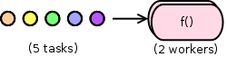

Unordered worker/stage¶
So far we’ve only used ordered workers/stages. If you don’t care for matching sequences of tasks with results, use unordered stages instead. Here’s an unordered version of the pipeline with output example:
from mpipe import UnorderedStage, Pipeline
def increment(value):
return value + 1
def double(value):
return value * 2
stage1 = UnorderedStage(increment, 2)
stage2 = UnorderedStage(double, 2)
stage1.link(stage2)
pipe = Pipeline(stage1)
for number in range(10):
pipe.put(number)
pipe.put(None)
for result in pipe.results():
print(result)
One thing to keep in mind: if your stage has only one worker, it makes no difference whether you use Ordered or Unordered objects – in either case the stage will behave as if it’s ordered. That’s why here we add an extra worker to each stage. The results, although all accounted for, appear out-of-order as expected:
6
10
2
12
16
20
4
8
14
18
Take a look at Ordered vs. unordered stages for further discussion about these two different approaches to stage design.
Multiple workers per stage¶
The previous example used two workers per stage, if only to illustrate the concept of unordered stages. A more realistic reason for dedicating additional workers to a stage is to gain processing speed (on multi-core or multi-CPU computer).
Consider a stream of five tasks feeding a single-stage pipeline running two workers:
Let’s assume the tasks arrive together in a batch, in quick succession, one right after another. If each one takes a full second of dedicated CPU time to complete, then on an SMP computer (assuming full system utilization) this workflow will take three seconds wall-clock time to complete: one second for the first two tasks done in parallel, another for the next two, and finally one more second for the last task, run by just one worker. Total CPU load will be 1.67, computed as:
166.67% total = 100% cpu * 5 tasks / 3 seconds
Since we don’t have any useful functionality (er, keeping in tradition with previous examples) let’s create a silly function that takes a measurable amount of time to complete. Here’s a program that prints the number of null-ops (Python pass statement) needed to spin – or busy wait – the CPU for one second:
from datetime import datetime
def getNumNullops(duration, max_sample=1.0):
"""Return number of do-nothing loop iterations."""
for amount in [2**x for x in range(100)]: # 1,2,4,8,...
begin = datetime.now()
for ii in xrange(amount): pass
elapsed = (datetime.now() - begin).total_seconds()
if elapsed > max_sample:
break
return int(amount/elapsed*duration)
if __name__ == '__main__':
print(getNumNullops(1.0))
And here is our pipeline implementation, a program that takes as command-line argument the number of null-ops:
import sys
import mpipe
def forloop(amount):
for ii in xrange(amount): pass
stage = mpipe.UnorderedStage(forloop, 2)
pipe = mpipe.Pipeline(stage)
for foobar in range(5):
pipe.put(int(sys.argv[1]))
pipe.put(None)
We can now run our scenario by passing the output of the first program as command-line argument to the second. A simple resource usage profile of the pipeline can be captured with something like this:
python test/count_nullops.py|xargs time python test/multiwork.py
If interested, modify the pipeline by changing the number of workers and/or input tasks. Also, consider running it on different computers – with different processor resources – and compare results.
Handling many tasks¶
A pipeline can easily clog with too many inputs. If you run the code below, it appears that the program freezes, while actually it is slowly draining your system memory:
import sys
from mpipe import UnorderedStage, Pipeline
def increment(value):
return value + 1
stage = UnorderedStage(increment)
pipe = Pipeline(stage)
for task in xrange(sys.maxint):
pipe.put(task)
pipe.put(None)
for result in pipe.results():
print(result)
What’s going on here? Note that we first put all tasks on the pipeline, and then follow up by retrieving the results. Unfortunately, we never get to the retrieval part because we’re too busy adding a whole bunch of tasks to the pipeline (sys.maxint is a huge number).
You probably Ctl-c’d out of the program by now.
Here’s what happened: feeding the pipeline just kept using up a bunch of system resources (socket buffers, to be precise) and slowing down the program. The program never got past the feed loop into the fetch-results loop.
One solution is to feed the pipeline with tasks while, concurrently in another process retrieve the results. This way we balance consumption of system resources, allocating them on one end, while simultaneously releasing them at the other. In the version below, we create another pipeline to do just that:
import sys
from mpipe import UnorderedStage, Pipeline
def increment(value):
return value + 1
stage = UnorderedStage(increment)
pipe = Pipeline(stage)
def pull(value):
for result in pipe.results():
print(result)
pipe2 = Pipeline(UnorderedStage(pull))
pipe2.put(True)
for task in xrange(sys.maxint):
pipe.put(task)
pipe.put(None)
pipe2.put(None)
Note that we start doing the retrieval in the second pipeline by adding a single arbitrary task – in this case the value True – before putting any tasks on the first pipeline. In this way we are ready to release resources as soon as the first pipeline starts producing results.
Disabling results¶
Even if your worker implementation produces a result, you may choose to disable it:
from mpipe import OrderedStage, Pipeline
def yes(value):
return value
pipe = Pipeline(OrderedStage(yes, disable_result=True))
for number in range(10):
pipe.put(number)
pipe.put(None)
for result in pipe.results():
print(result)
This pipeline does not produce output – the final for-loop is useless.
Results of a pipeline use system resources for storage until they’re eventually retrieved using get() or results(). But sometimes you may not want this effect, especially if the workflow produces a lot of output, none of which you care about. By disabling results, you’re able to reuse an existing worker/stage implementation, while forcing all output to be thrown away.